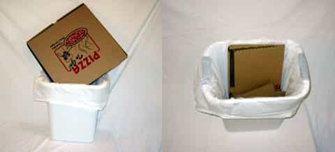

< < < Back
American Girls Are The Papa John’s Of Women – Return Of Kings
Fast food has its purpose. But I don’t know anyone, given the choice, who would pick a Big Mac over a gourmet meal from a fancy restaurant–or, better yet, a nice home-cooked banquet. Like it or not, women follow the same rules. My business has recently taken me on some pretty extensive travels around the world. And like so many men I’ve talked to, spending time away from the United States opened my eyes to a few things. But on those travels, one agonizing fact kept nagging my thoughts: sooner or later, I knew I was returning back to my country—and its Papa John women.
And, sure enough, the moment my big toe touched American soil, I confirmed every single one of my fears. We’re serving up fast food, and of the worst kind.
Why Papa John’s?
My beef with Papa John goes back a few years, but is encapsulated by one occasion when I was throwing out my garbage and spotted a greasy Papa John’s pizza box jammed in between the Hefty Cinch Saks. It couldn’t have looked more unappealing, with its greasy back, and it reminded me of the Papa’s thin, watery sauce and undercooked toppings. What might have been a passing moment was etched into my brain with one thought: somebody is keeping this place in business.
This might be controversial, but Papa John’s is the least edible of the fast food pizzas. I’d take a Domino’s and, to a lesser extent, a Pizza Hut pizza any day of the week. Pizza Hut may have that thick, butter-laden crust but the toppings don’t slide off of it the moment you don’t keep it at a perfect horizontal angle, or choose not to eat it with a fork and knife.
They’re greasy.
American girls’ fatness is so well-documented, it’s almost absurd to repeat it. To make matters worse, people all over the world know this about them—making them a national embarrassment of Starbucks-milkshake proportions. I was frankly shocked at the extent of laughs I could get at the expense of American women abroad. I felt a little unpatriotic at moments, but saying something as simple and factual as “an American girl could eat that whole thing,” would bring the house down. Reliably.
They’re unhealthy.
It’s one thing to be fat, but American girls are also mental wrecks. Medicated to oblivion, and—even the best of them—harboring bizarre attitudes towards sex and relationships, American women are nutritionally bankrupt. You don’t eat Papa John’s for the vitamins, and you don’t feel great after having finished one. While I’m left in a strange funk after spending any kind of time with an American girl, I was sighing at the loss when I’d drop off a foreign girl back at her house or put her in a cab.

They’re cold and sloppy.
Papa John’s may be convenient, but it comes at a roughly body temperature and makes a mess if you so much as try to lift up one of those soggy slices. That’s your American woman in a nutshell. Emotionally damaged, they’re apprehensive and terrified of showing the slightest hint of affection, thinking icy bitchiness is a replacement for polite disinterest. And they’ll almost certainly make a mess if you put your thirsty hand in that box. Getting involved with an American girl these days is a near-guarantee that you’ll be paying retail price for something that’s internationally known as being low quality–can’t cook, clean, or dress. I had forgotten flip-flops existed until just a few days ago.
They’re discarded.
Crushed between two garbage bags in the tank, American girls are the greasy remnants of the meal we ate in desperation last night. You may have gotten the box out of your house, but the effects remain: you’re that much more undernourished, unsatisfied, and depressed as a result. But on a street full of nicer restaurants, your best bet is to pick a better place to eat.
Returning to America after an extended hiatus has reminded me just how much men are being robbed blind here. Abroad, I’d see guys proudly holding hands with a pretty girl and both of them showing heart-felt affection. It took all of 10 minutes for me to spot the American equivalent: a miserable-looking dude with a dumpy girl—who was edible, if she was delivered to your house—in a contorted death grip that looked like someone had put a gun to their backs. As my bags came off the carousel, I knew one thing: I was back to eating Papa John’s.
Read More: 24 Signs She’s A Slut